Gastronomía y buena música
Texako es un gastro bar en la Avenida de la Constitución, 25, con la terraza a pie de calle y la estantería de botellas a la vista desde la acera.
Por la mañana, desayunos de lunes a viernes, de 9 a 16 h. A mediodía, cerveza fría y vino. Por la tarde llegan los Tardeos: DJ, combinados y un ambiente que empieza tranquilo y nadie sabe cómo termina.
Detrás de la barra hay un equipo que se acuerda de cómo tomas el café.
Los Tardeos de Texako
Tardes con DJ desde las 18:00 que empiezan tranquilas y acaban como acaban. Texako vuelve a ser el punto de encuentro.
- Desdelas 18:00
- MúsicaIndie, pop, rock, comercial, remember y house
- Para comerCatering en todos los tardeos
- FechasSe anuncian en Instagram
Artistas y DJs que han pasado por Texako
-
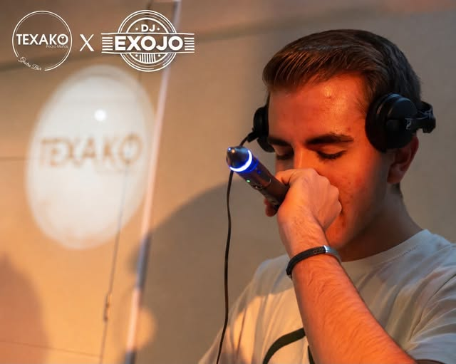
DJ Exojo
Sesiones de los Tardeos, con su sello en cada foto de la noche.
-

Miguel Ortiz
Invitado especial: pinchó tras el concierto de Demarco que organizó Texako.
-
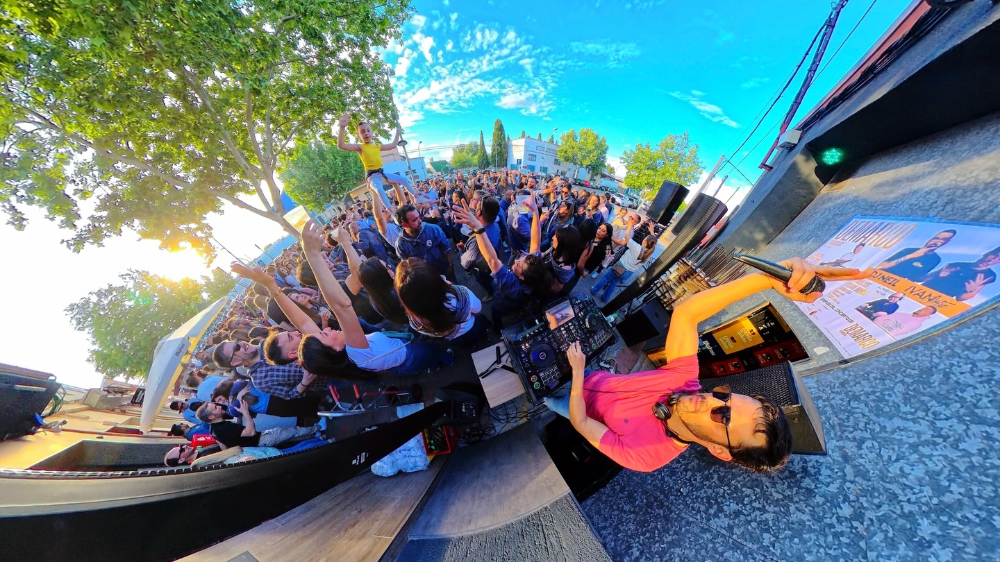
DJ Toledo
Llenó la terraza en el Mayo Manchego, con su Tour Dixfruta.
-
Benji Cruz
Invitado en la noche de pólvora de la Feria 2026, en Sommar.
-
Enygma
El DJ de la máscara, cabeza de cartel en Sommar para abrir la Feria.
-
DJ Chus Escribano
Abrió la nueva temporada de los Tardeos tras el verano.
También han pinchado Marcos Galván, Iván Ortiz y DJ Neil.
Noches especiales
Texako organizó el concierto de Demarco Flamenco y su Bonito Tour en el campo de fútbol Juande Ramos, con la colaboración del Ayuntamiento de Pedro Muñoz.
Y después, sesión con Marcos Galván, Miguel Ortiz, Iván Ortiz y DJ Neil.
Las próximas noches se anuncian en Instagram.
Sommar
Sommar by Texako: un espacio lleno de noches de verano, donde Texako monta sus fiestas cuando aprieta el calor.
Allí se celebró la noche de pólvora de la Feria 2026, con Enygma, Benji Cruz y DJ Miguel Ortiz a los platos.
- DóndePedro Muñoz
- AbreViernes, sábados y festivos
- TemporadaNoches de verano
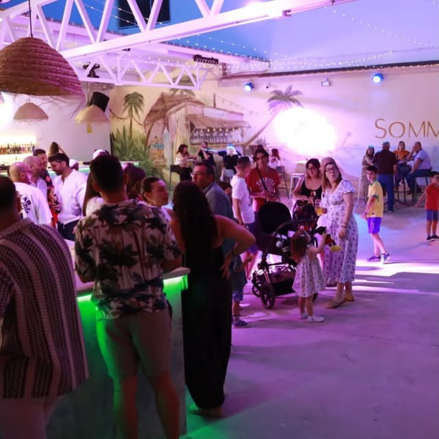
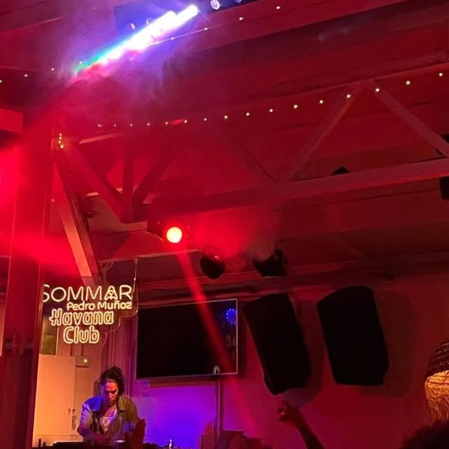
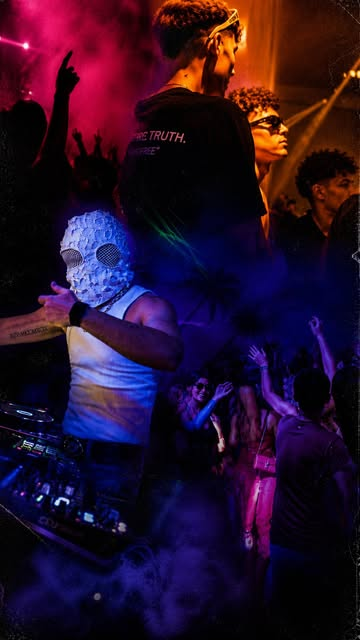
Noche de pólvora
Sábado
1 de agosto
Así arrancó la Feria y Fiestas 2026 de Pedro Muñoz en Sommar by Texako: pista llena hasta el amanecer.
Fiestas durante el año
- CarnavalFiesta de Carnaval en Texako
- Mayo ManchegoTerraza llena y DJ invitado
- FeriaFeria de Pedro Muñoz
- Cata maridajeVino y cocina en la misma mesa
Del café al último combinado
Combinados.
Cervezas.
Vinos.
Desayunos
lunes a viernes, 9 a 16 h
- CaféSolo, cortado o con lechedesde las 9
- TostadasPara empezar el díahasta las 16
Barra
cervezas y vinos
- CervezasCaña de grifo, en copa fríatodo el día
- VinosTinto y blanco por copastodo el día
Combinados
la especialidad de la tarde
- CombinadosElige botella de la estanteríatarde
- Gin-tonicCon la ginebra que quierastarde
Nuestros clientes
«Así de bien lo pasamos el finde pasado.» Caras de un tardeo cualquiera en Texako, con el equipo de la barra incluido.
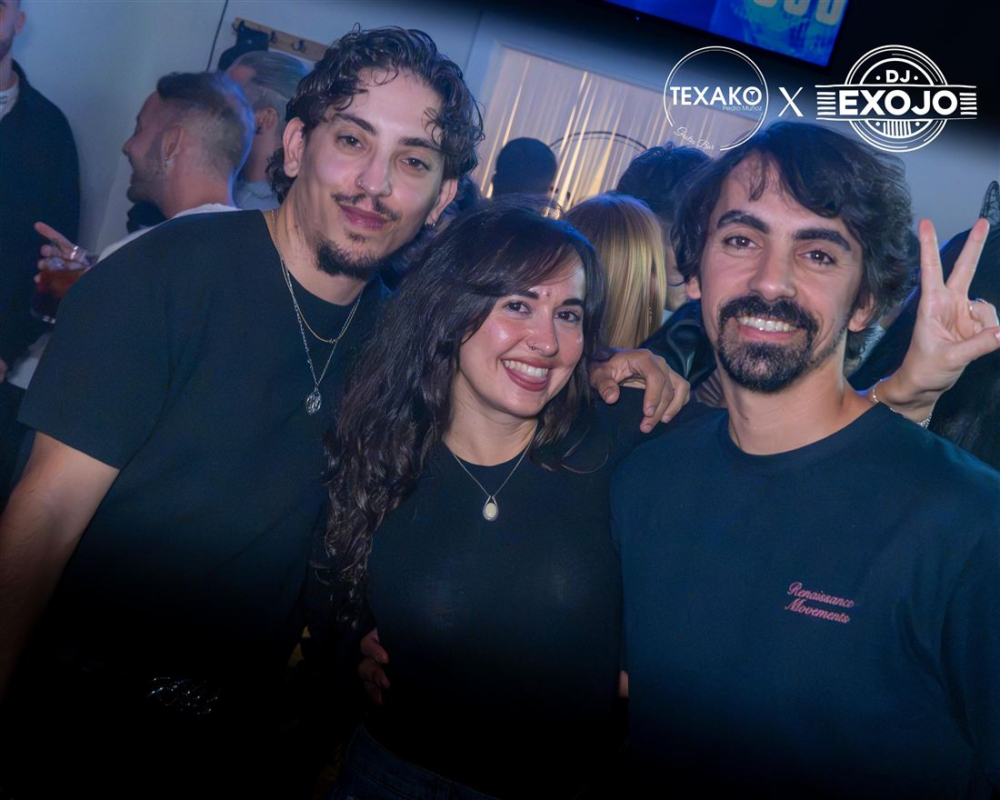
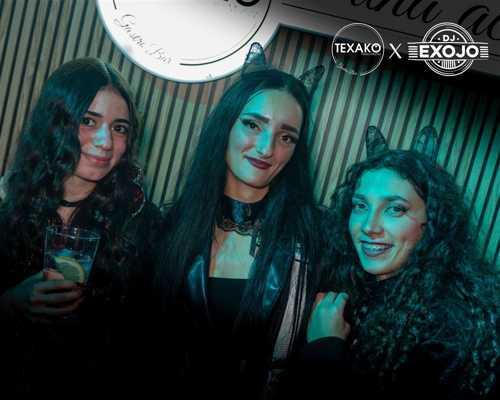
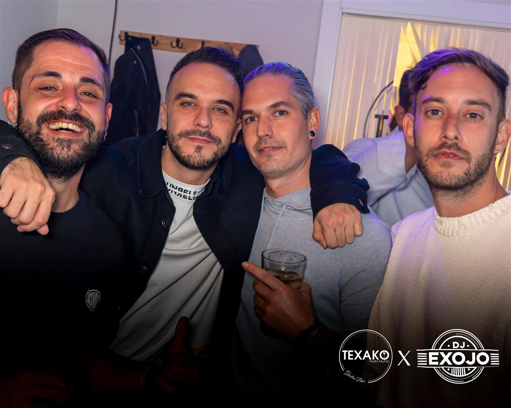
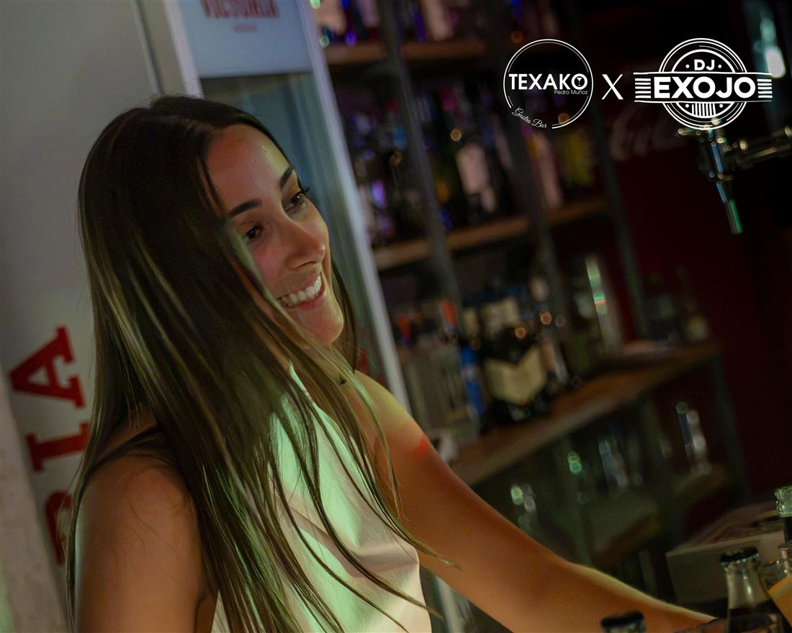
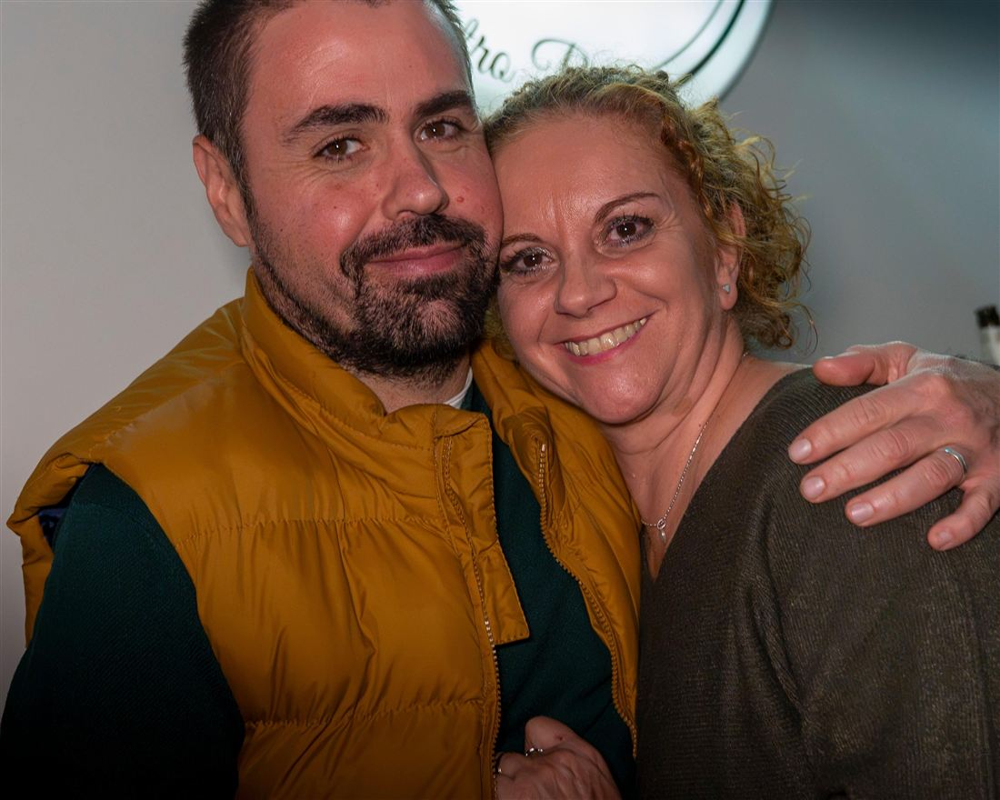
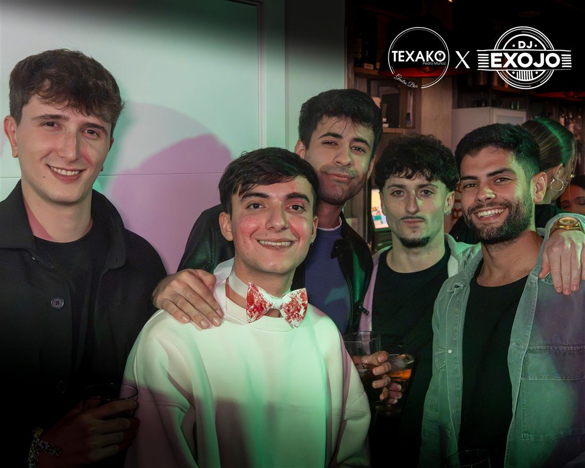
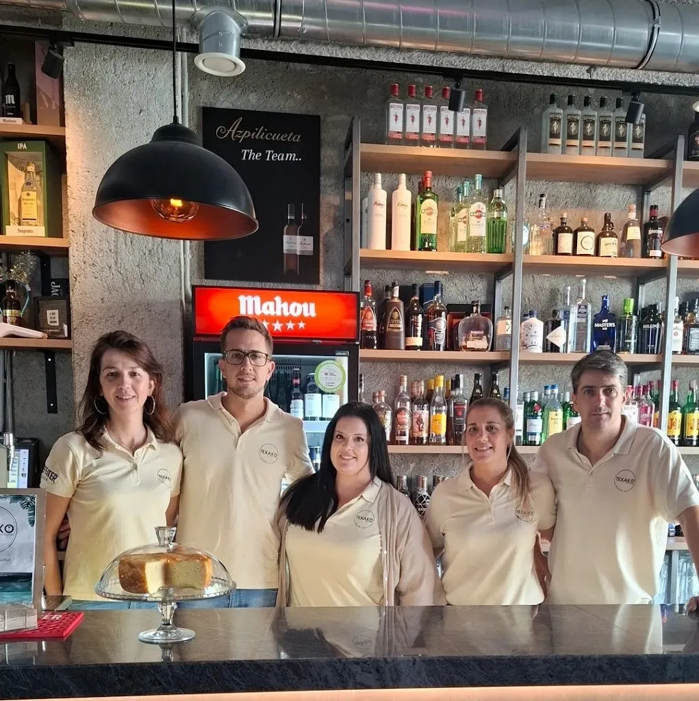
5,0 en Google Maps
«Seestásúper
bien,esagradable»
¿Ya has estado en Texako? Cuéntalo en Google.
Deja tu reseña en GoogleDónde estamos
- Texako Gastro Bar
- Av. de la Constitución, 25
- 13620 Pedro Muñoz, Ciudad Real
- Desayunos L–V 9–16 h · Tardeos 18 h
- ¿Te vienes?